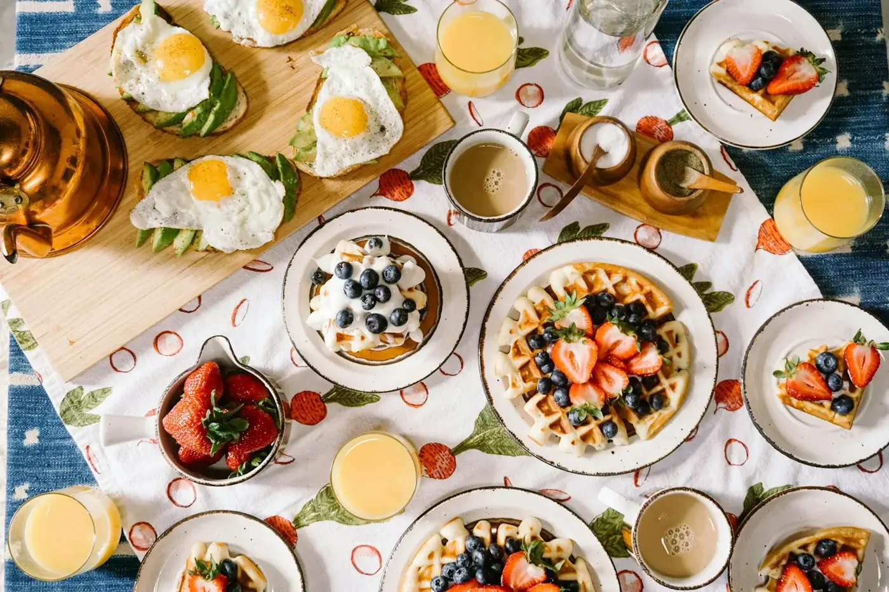

התפריט
משתנה קצת לפי העונה והשדות
קפה
- ₪11
אספרסו
קלוי אצלנו · תערובת גלילית
- ₪16
קפוצ׳ינו
חלב מלא או שיבולת־שועל
- ₪18
פילטר
פולים עונתיים, מזיגה איטית
- ₪19
קפה קר עם הל
מושרה 12 שעות, הל טרי
בראנץ׳
- ₪148
ארוחת בוקר גלילית לזוג
ביצים, סלטים, גבינות מהמשק ולחם מחמצת
- ₪58
שקשוקה גלילית
עגבניות שרי, לבנה וזעתר
- ₪54
פרנץ׳ טוסט בריוש
תפוחים מקורמלים ושמנת חמוצה
- ₪62
ביצים בנדיקט על מחמצת
תרד ורוטב הולנדז לימוני
צהריים וערב
- ₪56
סלט כרם
עלים, ענבים, אגוזי מלך וגבינת עיזים
- ₪68
פסטה עם פטריות יער
שמנת, טימין ופרמזן
- ₪94
פורל מהדן
תפוחי אדמה צלויים ועשבי תיבול
מתוקים
- ₪36
עוגת גבינה עם פירורים
מתכון של סבתא
- ₪32
מלבי עם מי ורדים
פיסטוקים וסירופ ורדים
יש אצלנו גם מנות טבעוניות וללא גלוטן — פשוט תשאלו